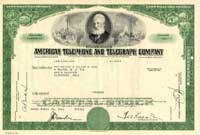
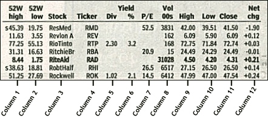

Wouldn't you love to be a business owner without ever having to show up at work? Imagine if you could sit back, watch your company grow, and collect the dividend checks as the money rolls in! This situation might sound like a pipe dream, but it's closer to reality than you might think.
As you've probably guessed, we're talking about owning stocks. This fabulous category of financial instruments is, without a doubt, one of the greatest tools ever invented for building wealth. Stocks are a part, if not the cornerstone, of nearly any investment portfolio. When you start on your road to financial freedom, you need to have a solid understanding of stocks and how they trade on the stock market.
Over the last few decades, the average person's interest in the stock market has grown exponentially. What was once a toy of the rich has now turned into the vehicle of choice for growing wealth. This demand coupled with advances in trading technology has opened up the markets so that nowadays nearly anybody can own stocks.
Despite their popularity, however, most people don't fully understand stocks. Much is learned from conversations around the water cooler with others who also don't know what they're talking about. Chances are you've already heard people say things like, "Bob's cousin made a killing in XYZ company, and now he's got another hot tip..." or "Watch out with stocks--you can lose your shirt in a matter of days!" So much of this misinformation is based on a get-rich-quick mentality, which was especially prevalent during the amazing dotcom market in the late '90s. People thought that stocks were the magic answer to instant wealth with no risk. The ensuing dotcom crash proved that this is not the case. Stocks can (and do) create massive amounts of wealth, but they aren't without risks. The only solution to this is education. The key to protecting yourself in the stock market is to understand where you are putting your money.
It is for this reason that we've created this tutorial: to provide the foundation you need to make investment decisions yourself. We'll start by explaining what a stock is and the different types of stock, and then we'll talk about how they are traded, what causes prices to change, how you buy stocks and much more.
The Definition of a Stock
Plain and simple, stock is a share in the ownership of a company. Stock represents a claim on the company's assets and earnings. As you acquire more stock, your ownership stake in the company becomes greater. Whether you say shares, equity, or stock, it all means the same thing.
Being an Owner
Holding a company's stock means that you are one of the many owners (shareholders) of a company and, as such, you have a claim (albeit usually very small) to everything the company owns. Yes, this means that technically you own a tiny sliver of every piece of furniture, every trademark, and every contract of the company. As an owner, you are entitled to your share of the company's earnings as well as any voting rights attached to the stock.
Example stock certificate
A stock is represented by a stock certificate. This is a fancy piece of paper that is proof of your ownership. In today's computer age, you won't actually get to see this document because your brokerage keeps these records electronically, which is also known as holding shares "in street name". This is done to make the shares easier to trade. In the past, when a person wanted to sell his or her shares, that person physically took the certificates down to the brokerage. Now, trading with a click of the mouse or a phone call makes life easier for everybody.
Being a shareholder of a public company does not mean you have a say in the day-to-day running of the business. Instead, one vote per share to elect the board of directors at annual meetings is the extent to which you have a say in the company. For instance, being a Microsoft shareholder doesn't mean you can call up Bill Gates and tell him how you think the company should be run. In the same line of thinking, being a shareholder of Anheuser Busch doesn't mean you can walk into the factory and grab a free case of Bud Light!
The management of the company is supposed to increase the value of the firm for shareholders. If this doesn't happen, the shareholders can vote to have the management removed, at least in theory. In reality, individual investors like you and I don't own enough shares to have a material influence on the company. It's really the big boys like large institutional investors and billionaire entrepreneurs who make the decisions.
For ordinary shareholders, not being able to manage the company isn't such a big deal. After all, the idea is that you don't want to have to work to make money, right? The importance of being a shareholder is that you are entitled to a portion of the company's profits and have a claim on assets. Profits are sometimes paid out in the form of dividends. The more shares you own, the larger the portion of the profits you get. Your claim on assets is only relevant if a company goes bankrupt. In case of liquidation, you'll receive what's left after all the creditors have been paid. This last point is worth repeating: the importance of stock ownership is your claim on assets and earnings. Without this, the stock wouldn't be worth the paper it's printed on.
Another extremely important feature of stock is its limited liability, which means that, as an owner of a stock, you are not personally liable if the company is not able to pay its debts. Other companies such as partnerships are set up so that if the partnership goes bankrupt the creditors can come after the partners (shareholders) personally and sell off their house, car, furniture, etc. Owning stock means that, no matter what, the maximum value you can lose is the value of your investment. Even if a company of which you are a shareholder goes bankrupt, you can never lose your personal assets.
Debt vs. Equity
Why does a company issue stock? Why would the founders share the profits with thousands of people when they could keep profits to themselves? The reason is that at some point every company needs to raise money. To do this, companies can either borrow it from somebody or raise it by selling part of the company, which is known as issuing stock. A company can borrow by taking a loan from a bank or by issuing bonds. Both methods fit under the umbrella of debt financing. On the other hand, issuing stock is called equity financing. Issuing stock is advantageous for the company because it does not require the company to pay back the money or make interest payments along the way. All that the shareholders get in return for their money is the hope that the shares will someday be worth more than what they paid for them. The first sale of a stock, which is issued by the private company itself, is called the initial public offering (IPO).
It is important that you understand the distinction between a company financing through debt and financing through equity. When you buy a debt investment such as a bond, you are guaranteed the return of your money (the principal) along with promised interest payments. This isn't the case with an equity investment. By becoming an owner, you assume the risk of the company not being successful - just as a small business owner isn't guaranteed a return, neither is a shareholder. As an owner, your claim on assets is less than that of creditors. This means that if a company goes bankrupt and liquidates, you, as a shareholder, don't get any money until the banks and bondholders have been paid out; we call this absolute priority. Shareholders earn a lot if a company is successful, but they also stand to lose their entire investment if the company isn't successful.
Risk
It must be emphasized that there are no guarantees when it comes to individual stocks. Some companies pay out dividends, but many others do not. And there is no obligation to pay out dividends even for those firms that have traditionally given them. Without dividends, an investor can make money on a stock only through its appreciation in the open market. On the downside, any stock may go bankrupt, in which case your investment is worth nothing.
Although risk might sound all negative, there is also a bright side. Taking on greater risk demands a greater return on your investment. This is the reason why stocks have historically outperformed other investments such as bonds or savings accounts. Over the long term, an investment in stocks has historically had an average return of around 10-12%.
There are two main types of stocks: common stock and preferred stock.
Common Stock
Common stock is, well, common. When people talk about stocks they are usually referring to this type. In fact, the majority of stock is issued is in this form. We basically went over features of common stock in the last section. Common shares represent ownership in a company and a claim (dividends) on a portion of profits. Investors get one vote per share to elect the board members, who oversee the major decisions made by management.
Over the long term, common stock, by means of capital growth, yields higher returns than almost every other investment. This higher return comes at a cost since common stocks entail the most risk. If a company goes bankrupt and liquidates, the common shareholders will not receive money until the creditors, bondholders and preferred shareholders are paid.
Preferred Stock
Preferred stock represents some degree of ownership in a company but usually doesn't come with the same voting rights. (This may vary depending on the company.) With preferred shares, investors are usually guaranteed a fixed dividend forever. This is different than common stock, which has variable dividends that are never guaranteed. Another advantage is that in the event of liquidation, preferred shareholders are paid off before the common shareholder (but still after debt holders). Preferred stock may also be callable, meaning that the company has the option to purchase the shares from shareholders at anytime for any reason (usually for a premium).
Some people consider preferred stock to be more like debt than equity. A good way to think of these kinds of shares is to see them as being in between bonds and common shares.
Different Classes of Stock
Common and preferred are the two main forms of stock; however, it's also possible for companies to customize different classes of stock in any way they want. The most common reason for this is the company wanting the voting power to remain with a certain group; therefore, different classes of shares are given different voting rights. For example, one class of shares would be held by a select group who are given ten votes per share while a second class would be issued to the majority of investors who are given one vote per share.
When there is more than one class of stock, the classes are traditionally designated as Class A and Class B. Berkshire Hathaway (ticker: BRK), has two classes of stock. The different forms are represented by placing the letter behind the ticker symbol in a form like this: "BRKa, BRKb" or "BRK.A, BRK.B".
Most stocks are traded on exchanges, which are places where buyers and sellers meet and decide on a price. Some exchanges are physical locations where transactions are carried out on a trading floor. You've probably seen pictures of a trading floor, in which traders are wildly throwing their arms up, waving, yelling, and signaling to each other. The other type of exchange is virtual, composed of a network of computers where trades are made electronically.
The purpose of a stock market is to facilitate the exchange of securities between buyers and sellers, reducing the risks of investing. Just imagine how difficult it would be to sell shares if you had to call around the neighborhood trying to find a buyer. Really, a stock market is nothing more than a super-sophisticated farmers' market linking buyers and sellers.
Before we go on, we should distinguish between the primary market and the secondary market. The primary market is where securities are created (by means of an IPO) while, in the secondary market, investors trade previously-issued securities without the involvement of the issuing-companies. The secondary market is what people are referring to when they talk about the stock market. It is important to understand that the trading of a company's stock does not directly involve that company.
The New York Stock Exchange
The most prestigious exchange in the world is the New York Stock Exchange (NYSE). The "Big Board" was founded over 200 years ago in 1792 with the signing of the Buttonwood Agreement by 24 New York City stockbrokers and merchants. Currently the NYSE, with stocks like General Electric, McDonald's, Citigroup, Coca-Cola, Gillette and Wal-mart, is the market of choice for the largest companies in America.
The NYSE is the first type of exchange (as we referred to above), where much of the trading is done face-to-face on a trading floor. This is also referred to as a listed exchange. Orders come in through brokerage firms that are members of the exchange and flow down to floor brokers who go to a specific spot on the floor where the stock trades. At this location, known as the trading post, there is a specific person known as the specialist whose job is to match buyers and sellers. Prices are determined using an auction method: the current price is the highest amount any buyer is willing to pay and the lowest price at which someone is willing to sell. Once a trade has been made, the details are sent back to the brokerage firm, who then notifies the investor who placed the order. Although there is human contact in this process, don't think that the NYSE is still in the stone age: computers play a huge role in the process.
The Nasdaq
The second type of exchange is the virtual sort called an over-the-counter (OTC) market, of which the Nasdaq is the most popular. These markets have no central location or floor brokers whatsoever. Trading is done through a computer and telecommunications network of dealers. It used to be that the largest companies were listed only on the NYSE while all other second tier stocks traded on the other exchanges. The tech boom of the late '90s changed all this; now the Nasdaq is home to several big technology companies such as Microsoft, Cisco, Intel, Dell and Oracle. This has resulted in the Nasdaq becoming a serious competitor to the NYSE.
On the Nasdaq brokerages act as market makers for various stocks. A market maker provides continuous bid and ask prices within a prescribed percentage spread for shares for which they are designated to make a market. They may match up buyers and sellers directly but usually they will maintain an inventory of shares to meet demands of investors.
Other Exchanges
The third largest exchange in the U.S. is the American Stock Exchange (AMEX). The AMEX used to be an alternative to the NYSE, but that role has since been filled by the Nasdaq. In fact, the National Association of Securities Dealers (NASD), which is the parent of Nasdaq, bought the AMEX in 1998. Almost all trading now on the AMEX is in small-cap stocks and derivatives.
There are many stock exchanges located in just about every country around the world. American markets are undoubtedly the largest, but they still represent only a fraction of total investment around the globe. The two other main financial hubs are London, home of the London Stock Exchange, and Hong Kong, home of the Hong Kong Stock Exchange. The last place worth mentioning is the over-the-counter bulletin board (OTCBB). The Nasdaq is an over-the-counter market, but the term commonly refers to small public companies that don't meet the listing requirements of any of the regulated markets, including the Nasdaq. The OTCBB is home to penny stocks because there is little to no regulation. This makes investing in an OTCBB stock very risky.
Stock prices change every day as a result of market forces. By this we mean that share prices change because of supply and demand. If more people want to buy a stock (demand) than sell it (supply), then the price moves up. Conversely, if more people wanted to sell a stock than buy it, there would be greater supply than demand, and the price would fall.
Understanding supply and demand is easy. What is difficult to comprehend is what makes people like a particular stock and dislike another stock. This comes down to figuring out what news is positive for a company and what news is negative. There are many answers to this problem and just about any investor you ask has their own ideas and strategies.
That being said, the principal theory is that the price movement of a stock indicates what investors feel a company is worth. Don't equate a company's value with the stock price. The value of a company is its market capitalization, which is the stock price multiplied by the number of shares outstanding. For example, a company that trades at $100 per share and has 1 million shares outstanding has a lesser value than a company that trades at $50 that has 5 million shares outstanding ($100 x 1 million = $100 million while $50 x 5 million = $250 million). To further complicate things, the price of a stock doesn't only reflect a company's current value, it also reflects the growth that investors expect in the future.
The most important factor that affects the value of a company is its earnings. Earnings are the profit a company makes, and in the long run no company can survive without them. It makes sense when you think about it. If a company never makes money, it isn't going to stay in business. Public companies are required to report their earnings four times a year (once each quarter). Wall Street watches with rabid attention at these times, which are referred to as earnings seasons. The reason behind this is that analysts base their future value of a company on their earnings projection. If a company's results surprise (are better than expected), the price jumps up. If a company's results disappoint (are worse than expected), then the price will fall.
Of course, it's not just earnings that can change the sentiment towards a stock (which, in turn, changes its price). It would be a rather simple world if this were the case! During the dotcom bubble, for example, dozens of internet companies rose to have market capitalizations in the billions of dollars without ever making even the smallest profit. As we all know, these valuations did not hold, and most internet companies saw their values shrink to a fraction of their highs. Still, the fact that prices did move that much demonstrates that there are factors other than current earnings that influence stocks. Investors have developed literally hundreds of these variables, ratios and indicators. Some you may have already heard of, such as the price/earnings ratio, while others are extremely complicated and obscure with names like Chaikin oscillator or moving average convergence divergence.
So, why do stock prices change? The best answer is that nobody really knows for sure. Some believe that it isn't possible to predict how stock prices will change, while others think that by drawing charts and looking at past price movements, you can determine when to buy and sell. The only thing we do know is that stocks are volatile and can change in price extremely rapidly.
The important things to grasp about this subject are the following:
1. At the most fundamental level, supply and demand in the market determines stock price.
2. Price times the number of shares outstanding (market capitalization) is the value of a company. Comparing just the share price of two companies is meaningless.
3. Theoretically, earnings are what affect investors' valuation of a company, but there are other indicators that investors use to predict stock price. Remember, it is investors' sentiments, attitudes and expectations that ultimately affect stock prices.
4. There are many theories that try to explain the way stock prices move the way they do. Unfortunately, there is no one theory that can explain everything.
You've now learned what a stock is and a little bit about the principles behind the stock market, but how do you actually go about buying stocks? Thankfully, you don't have to go down into the trading pit yelling and screaming your order. There are two main ways to purchase stock:
1. Using a Brokerage
The most common method to buy stocks is to use a brokerage. Brokerages come in two different flavors. Full-service brokerages offer you (supposedly) expert advice and can manage your account; they also charge a lot. Discount brokerages offer little in the way of personal attention but are much cheaper.
At one time, only the wealthy could afford a broker since only the expensive, full-service brokers were available. With the internet came the explosion of online discount brokers. Thanks to them nearly anybody can now afford to invest in the market.
2. DRIPs & DIPs
Dividend reinvestment plans (DRIPs) and direct investment plans (DIPs) are plans by which individual companies, for a minimal cost, allow shareholders to purchase stock directly from the company. Drips are a great way to invest small amounts of money at regular intervals.
Any financial paper has stock quotes that will look something like the image below:
Columns 1 & 2: 52-Week High and Low - These are the highest and lowest prices at which a stock has traded over the previous 52 weeks (one year). This typically does not include the previous day's trading.
Column 3: Company Name & Type of Stock - This column lists the name of the company. If there are no special symbols or letters following the name, it is common stock. Different symbols imply different classes of shares. For example, "pf" means the shares are preferred stock.
Column 4: Ticker Symbol - This is the unique alphabetic name which identifies the stock. If you watch financial TV, you have seen the ticker tape move across the screen, quoting the latest prices alongside this symbol. If you are looking for stock quotes online, you always search for a company by the ticker symbol. If you don't know what a particular company's ticker is you can search for it at: http://finance.yahoo.com/l.
Column 5: Dividend Per Share - This indicates the annual dividend payment per share. If this space is blank, the company does not currently pay out dividends.
Column 6: Dividend Yield - The percentage return on the dividend. Calculated as annual dividends per share divided by price per share.
Column 7: Price/Earnings Ratio - This is calculated by dividing the current stock price by earnings per share from the last four quarters. For more detail on how to interpret this, see our P/E Ratio tutorial.
Column 8: Trading Volume - This figure shows the total number of shares traded for the day, listed in hundreds. To get the actual number traded, add "00" to the end of the number listed.
Column 9 & 10: Day High and Low - This indicates the price range at which the stock has traded at throughout the day. In other words, these are the maximum and the minimum prices that people have paid for the stock.
Column 11: Close - The close is the last trading price recorded when the market closed on the day. If the closing price is up or down more than 5% than the previous day's close, the entire listing for that stock is bold-faced. Keep in mind, you are not guaranteed to get this price if you buy the stock the next day because the price is constantly changing (even after the exchange is closed for the day). The close is merely an indicator of past performance and except in extreme circumstances serves as a ballpark of what you should expect to pay.
Column 12: Net Change - This is the dollar value change in the stock price from the previous day's closing price. When you hear about a stock being "up for the day," it means the net change was positive.
Quotes on the Internet
Nowadays, it's far more convenient for most to get stock quotes off the Internet. This method is superior because most sites update throughout the day and give you more information, news, charting, research, etc.
To get quotes, simply enter the ticker symbol into the quote box of any major financial site like Yahoo! Finance, CBS Marketwatch, or MSN Moneycentral. The example below shows a quote for Microsoft (MSFT) from Yahoo Finance. Interpreting the data is exactly the same as with the newspaper.
On Wall Street, the bulls and bears are in a constant struggle. If you haven't heard of these terms already, you undoubtedly will as you begin to invest.
The Bulls
A bull market is when everything in the economy is great, people are finding jobs, gross domestic product (GDP) is growing, and stocks are rising. Things are just plain rosy! Picking stocks during a bull market is easier because everything is going up. Bull markets cannot last forever though, and sometimes they can lead to dangerous situations if stocks become overvalued. If a person is optimistic and believes that stocks will go up, he or she is called a "bull" and is said to have a "bullish outlook".
The Bears
A bear market is when the economy is bad, recession is looming and stock prices are falling. Bear markets make it tough for investors to pick profitable stocks. One solution to this is to make money when stocks are falling using a technique called short selling. Another strategy is to wait on the sidelines until you feel that the bear market is nearing its end, only starting to buy in anticipation of a bull market. If a person is pessimistic, believing that stocks are going to drop, he or she is called a "bear" and said to have a "bearish outlook".
The Other Animals on the Farm - Chickens and Pigs
Chickens are afraid to lose anything. Their fear overrides their need to make profits and so they turn only to money-market securities or get out of the markets entirely. While it's true that you should never invest in something over which you lose sleep, you are also guaranteed never to see any return if you avoid the market completely and never take any risk,
Pigs are high-risk investors looking for the one big score in a short period of time. Pigs buy on hot tips and invest in companies without doing their due diligence. They get impatient, greedy, and emotional about their investments, and they are drawn to high-risk securities without putting in the proper time or money to learn about these investment vehicles. Professional traders love the pigs, as it's often from their losses that the bulls and bears reap their profits.
What Type of Investor Will You Be?
There are plenty of different investment styles and strategies out there. Even though the bulls and bears are constantly at odds, they can both make money with the changing cycles in the market. Even the chickens see some returns, though not a lot. The one loser in this picture is the pig.
Make sure you don't get into the market before you are ready. Be conservative and never invest in anything you do not understand. Before you jump in without the right knowledge, think about this old stock market saying:
"Bulls make money, bears make money, but pigs just get slaughtered!"
Let's recap what we've learned in this tutorial:
{kind=link}
{kind=link}
{kind=link}